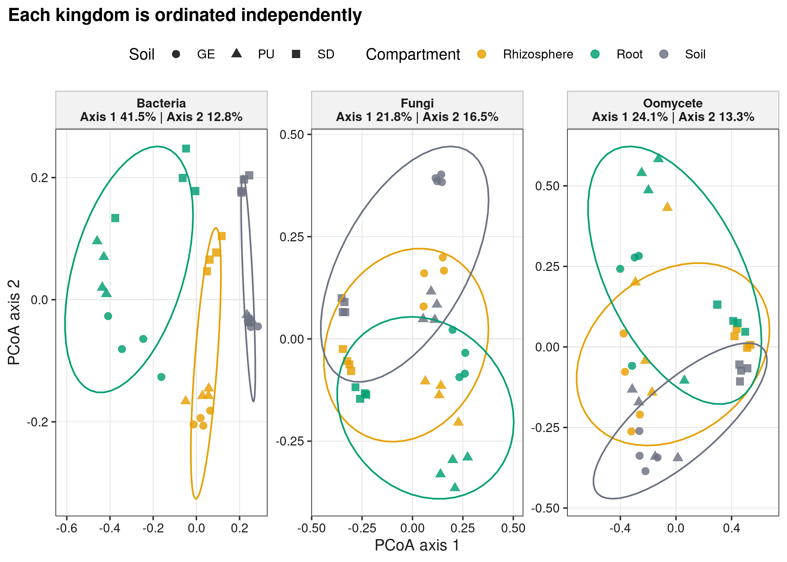
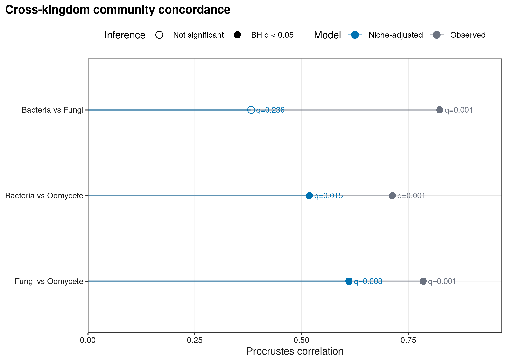
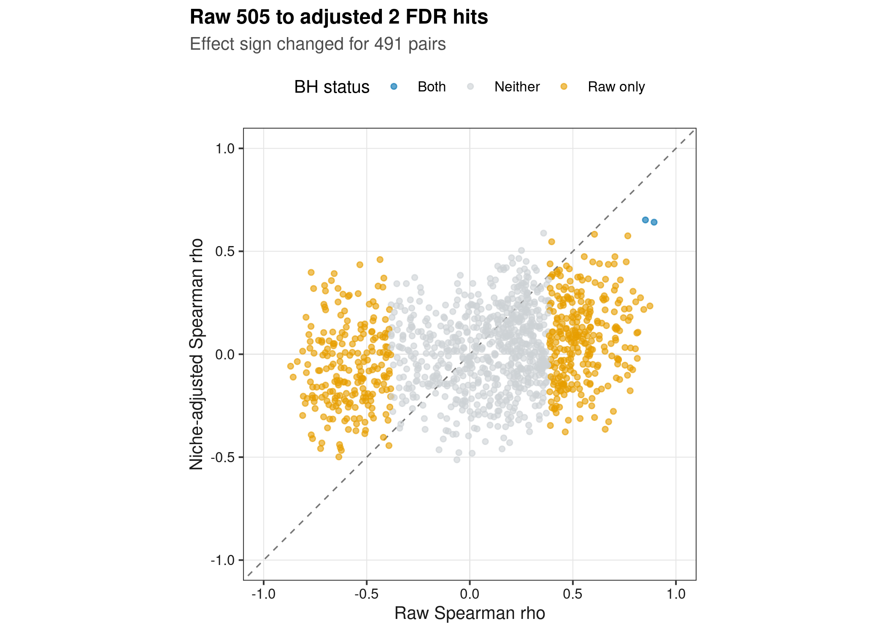
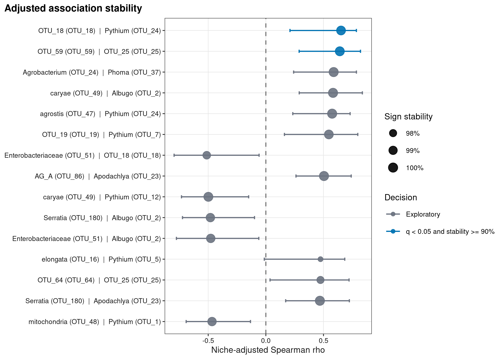

options(timeout = 600)
data_url <- "https://raw.githubusercontent.com/petemeng/microbiome-best-practices/3cb6a817e0c73ab7ecbec1cedc1ad80cbb9ecfaa/"
input_files <- c(
"scripts/run_article49_multi_kingdom.R",
"data/small/multi-kingdom-duran/fungi-otutab.tsv",
"data/small/multi-kingdom-duran/fungi-taxonomy.tsv",
"data/small/multi-kingdom-duran/metadata.tsv",
"data/small/multi-kingdom-duran/oomycete-otutab.tsv",
"data/small/multi-kingdom-duran/oomycete-taxonomy.tsv",
"data/small/multi-kingdom-duran/otutab.tsv",
"data/small/multi-kingdom-duran/source-summary.json",
"data/small/multi-kingdom-duran/taxonomy.tsv"
)
for (path in input_files) {
dir.create(dirname(path), recursive = TRUE, showWarnings = FALSE)
if (!file.exists(path)) download.file(paste0(data_url, path), path, mode = "wb", quiet = TRUE)
}多界微生物组：16S＋ITS/18S 联合分析
多界分析首先解决测量尺度与样本配对
Durán et al. (2018)联合细菌、真菌与 oomycete communities 研究 Arabidopsis root microbiota 的 interkingdom structure 与植物存活。
重要先给结论
三个 kingdom 的 observed sample configurations 两两一致（Procrustes \(q=0.001\)）。去除 soil × compartment 均值后，bacteria–fungi concordance 不再显著（\(r=0.382,q=0.236\)），而 bacteria–oomycete 与 fungi–oomycete 仍保留较弱一致性（\(q=0.015\) 与 0.003）。跨 feature 的 1,200 对检验中，raw FDR hits 有 505 对，niche-adjusted 后只剩 2 对；两对的分层 bootstrap sign stability 分别为 99.6% 与 99.8%。这是候选关联，不是已证实的跨界互作。
下载并读取本次分析的数据
需要 R，以及 ggplot2、jsonlite、permute、ragg、readr、scales、svglite、vegan。本次使用同一批样本的细菌、真菌和卵菌丰度与分类表，以及共同的样本信息表。
在一个新建的文件夹中运行以下代码，下载文件后按文中的顺序继续分析：
library(ggplot2)
set.seed(20260749)
font_pub <- "sans"
pal_pub <- c(
blue = "#0072B2", orange = "#E69F00", green = "#009E73",
vermillion = "#D55E00", purple = "#CC79A7", sky = "#56B4E9",
yellow = "#F0E442", grey = "#6B7280"
)
scale_color_pub <- function(..., values = unname(pal_pub)) {
ggplot2::scale_color_manual(..., values = values)
}
scale_fill_pub <- function(..., values = unname(pal_pub)) {
ggplot2::scale_fill_manual(..., values = values)
}
theme_pub <- function(base_size = 10, base_family = font_pub) {
ggplot2::theme_bw(base_size = base_size, base_family = base_family) +
ggplot2::theme(
panel.grid.minor = ggplot2::element_blank(),
panel.grid.major = ggplot2::element_line(colour = "#E6E6E6", linewidth = 0.25),
axis.text = ggplot2::element_text(colour = "#1A1A1A"),
axis.title = ggplot2::element_text(colour = "#1A1A1A"),
plot.title.position = "plot",
plot.title = ggplot2::element_text(face = "bold", size = ggplot2::rel(1.15)),
plot.subtitle = ggplot2::element_text(colour = "#4D4D4D"),
plot.caption = ggplot2::element_text(colour = "#666666", hjust = 0),
strip.background = ggplot2::element_rect(fill = "#F2F2F2", colour = "#B3B3B3"),
strip.text = ggplot2::element_text(face = "bold"),
legend.key = ggplot2::element_blank(), legend.position = "top"
)
}
save_pub <- function(plot, file_base, width = 89, height = 70, units = "mm", dpi = 600) {
dir.create(dirname(file_base), recursive = TRUE, showWarnings = FALSE)
ggplot2::ggsave(paste0(file_base, ".pdf"), plot, width = width, height = height,
units = units, device = grDevices::cairo_pdf, family = font_pub, bg = "white")
ggplot2::ggsave(paste0(file_base, ".svg"), plot, width = width, height = height,
units = units, device = svglite::svglite, bg = "white")
ggplot2::ggsave(paste0(file_base, ".png"), plot, width = width, height = height,
units = units, dpi = dpi, device = ragg::agg_png, bg = "white")
ggplot2::ggsave(paste0(file_base, ".tiff"), plot, width = width, height = height,
units = units, dpi = dpi, device = ragg::agg_tiff,
compression = "lzw", bg = "white")
invisible(plot)
}读取细菌三件套，再按样本 ID 合并另外两类群落数据
read_keyed_tsv <- function(path) {
x <- readr::read_tsv(path, show_col_types = FALSE, progress = FALSE,
name_repair = "minimal", na = character())
ids <- as.character(x[[1L]])
stopifnot(!anyDuplicated(ids))
out <- as.data.frame(x[-1L], check.names = FALSE)
rownames(out) <- ids
out
}
data_dir <- "data/small/multi-kingdom-duran"
metadata <- read_keyed_tsv(file.path(data_dir, "metadata.tsv"))
view_files <- c(
Bacteria = "otutab.tsv", Fungi = "fungi-otutab.tsv",
Oomycete = "oomycete-otutab.tsv"
)
taxonomy_files <- c(
Bacteria = "taxonomy.tsv", Fungi = "fungi-taxonomy.tsv",
Oomycete = "oomycete-taxonomy.tsv"
)
counts <- lapply(view_files, function(filename) {
raw <- read_keyed_tsv(file.path(data_dir, filename))
value <- as.matrix(data.frame(lapply(raw, as.numeric), check.names = FALSE))
rownames(value) <- rownames(raw)
value
})
taxonomy <- lapply(taxonomy_files, function(filename) {
read_keyed_tsv(file.path(data_dir, filename))
})
stopifnot(
identical(vapply(counts, nrow, integer(1)), c(Bacteria = 772L, Fungi = 1063L, Oomycete = 219L)),
all(vapply(counts, ncol, integer(1)) == 36L),
all(vapply(counts, function(x) identical(colnames(x), rownames(metadata)), logical(1))),
identical(as.integer(table(metadata$Soil, metadata$Compartment)), rep(4L, 9))
)
head(counts$Bacteria[, 1:5])
head(taxonomy$Bacteria)
head(metadata) GE_rhizosphere_R1 GE_rhizosphere_R2 GE_rhizosphere_R3 GE_rhizosphere_R4
OTU_81 131 28 16 20
OTU_3 9516 4704 698 129
OTU_670 277 109 89 36
OTU_2 355 56 16 36
OTU_32 43 10 9 8
OTU_29 24 12 7 7
GE_root_R1
OTU_81 15
OTU_3 2290
OTU_670 21
OTU_2 4721
OTU_32 0
OTU_29 0
Kingdom Phylum Class Order
OTU_81 Bacteria Actinobacteria Actinobacteria Actinomycetales
OTU_3 Bacteria Bacteroidetes Flavobacteriia Flavobacteriales
OTU_670 Bacteria Chloroflexi Chloroflexi [Roseiflexales]
OTU_2 Bacteria Actinobacteria Actinobacteria Actinomycetales
OTU_32 Bacteria Chloroflexi TK10 AKYG885
OTU_29 Bacteria Chloroflexi TK10 AKYG885
Family Genus Species
OTU_81 Nocardioidaceae Friedmanniella
OTU_3 Flavobacteriaceae Flavobacterium
OTU_670 [Kouleothrixaceae]
OTU_2 Kineosporiaceae
OTU_32 Dolo_23
OTU_29 Dolo_23
Lineage
OTU_81 k__Bacteria;p__Actinobacteria;c__Actinobacteria;o__Actinomycetales;f__Nocardioidaceae;g__Friedmanniella;s__
OTU_3 k__Bacteria;p__Bacteroidetes;c__Flavobacteriia;o__Flavobacteriales;f__Flavobacteriaceae;g__Flavobacterium;s__
OTU_670 k__Bacteria;p__Chloroflexi;c__Chloroflexi;o__[Roseiflexales];f__[Kouleothrixaceae];g__;s__
OTU_2 k__Bacteria;p__Actinobacteria;c__Actinobacteria;o__Actinomycetales;f__Kineosporiaceae;g__;s__
OTU_32 k__Bacteria;p__Chloroflexi;c__TK10;o__AKYG885;f__Dolo_23;g__;s__
OTU_29 k__Bacteria;p__Chloroflexi;c__TK10;o__AKYG885;f__Dolo_23;g__;s__
DisplayName
OTU_81 Friedmanniella
OTU_3 Flavobacterium
OTU_670 [Kouleothrixaceae]
OTU_2 Kineosporiaceae
OTU_32 Dolo_23
OTU_29 Dolo_23
Soil Compartment Replicate BacterialSampleID
GE_rhizosphere_R1 GE Rhizosphere 1 1161.SH.GA.Epi.1
GE_rhizosphere_R2 GE Rhizosphere 2 1161.SH.GA.Epi.2
GE_rhizosphere_R3 GE Rhizosphere 3 1161.SH.GA.Epi.3
GE_rhizosphere_R4 GE Rhizosphere 4 1161.SH.GA.Epi.4
GE_root_R1 GE Root 1 1161.SH.GA.Endo.1
GE_root_R2 GE Root 2 1161.SH.GA.Endo.2
FungalSampleID OomyceteSampleID
GE_rhizosphere_R1 L0006.SH.GE.Epi.ITS1.1 L0006.SH.GE.Epi.ITS.Om.1
GE_rhizosphere_R2 L0006.SH.GE.Epi.ITS1.2 L0006.SH.GE.Epi.ITS.Om.2
GE_rhizosphere_R3 L0006.SH.GE.Epi.ITS1.3 L0006.SH.GE.Epi.ITS.Om.3
GE_rhizosphere_R4 L0006.SH.GE.Epi.ITS1.4 L0006.SH.GE.Epi.ITS.Om.4
GE_root_R1 L0006.SH.GE.Endo.ITS1.1 L0006.SH.GE.Endo.ITS.Om.1
GE_root_R2 L0006.SH.GE.Endo.ITS1.2 L0006.SH.GE.Endo.ITS.Om.2下载完整 R 脚本。脚本包含数据下载、计算和图形导出。
首次使用时安装 R 包
install.packages(c(
"ggplot2", "jsonlite", "permute", "ragg", "readr", "scales",
"svglite", "systemfonts", "vegan"
))多界整合先保证“同一样本、不同数据生成过程”
分别过滤三个生物界的特征
16S、ITS 与 oomycete primers 的 amplification efficiency、copy number、taxonomy resolution 和 sequencing depth 不可比。不能把三张 raw count tables 纵向拼接后算一个相对丰度；本文分别做 prevalence filter、transformation 与 distance，再在 sample level 比较结构。
sample pairing 是跨界分析的基本单位
本数据每个 SampleID 唯一对应同一 soil、compartment 与 replicate 的三个 libraries。library names 可以不同，但必须通过显式 key 映射；取交集后若不是预期的 36 个完整 pairs，立即停止。
比较整体一致性，并检查共同环境的影响
Observed concordance 可能只说明 root、rhizosphere、soil 对所有 kingdom 都有强 selection。本文再对每套 ordination axes 回归 Soil * Compartment，并把 permutations 限制在 9 个 niche cells 内，检验 replicate-level residual concordance。
调整环境因素后统一校正跨界关联检验
每界先按 CLR variance 不使用结局信息 地取 20 个 features；三个跨界组合共 \(20\times20\times3=1{,}200\) 对。raw 与 niche-adjusted Spearman 分别计算，但 adjusted p-values 在完整 1,200 对上统一 BH correction。
统计关联不等于生态相互作用
正相关可来自共同环境偏好、宿主 filtering、间接网络或 compositional coupling；负相关也不自动等于竞争。要把“association”升级为“interaction”，至少需要 perturbation、synthetic community、isolate/co-culture、time ordering 或可验证的 molecular mechanism。
深入：为何还要做分层 bootstrap
单次 correlation 的小 p-value 可能由 36 个样本中的少数 points 驱动。本文在每个 Soil × Compartment cell 内有放回抽 4 个 replicates，重新拟合 niche model 并计算 residual Spearman，重复 500 次。95% interval 与 sign stability 检查 effect direction 是否依赖个别 replicate；它不能替代 external validation。
各界独立处理，再比较共同样本结构
区分生态位共享与跨界关联
从三界配对数据重新计算排序、生态位调整与跨界关联，并进行分层 bootstrap。
run_analysis <- function(command, args) {
output <- system2(command, args, stdout = TRUE, stderr = TRUE)
status <- attr(output, "status")
if (!is.null(status) && status != 0L) stop(paste(tail(output, 20), collapse = "\n"))
invisible(output)
}
run_analysis(file.path(R.home("bin"), "Rscript"), c("--vanilla", "scripts/run_article49_multi_kingdom.R"))完整计算脚本：run_article49_multi_kingdom.R。
每个 kingdom 独立 Hellinger/Bray PCoA
模型调用与参数
library(vegan)
hellinger <- lapply(counts, function(x) decostand(t(x), method = "hellinger"))
bray <- lapply(hellinger, function(x) vegdist(x, method = "bray"))
ordination <- lapply(bray, function(d) cmdscale(d, k = 5, eig = TRUE, add = TRUE))
set.seed(20260726)
lapply(bray, function(d) {
adonis2(d ~ Soil * Compartment, data = metadata, permutations = 999, by = "margin")
})比较调整环境因素前后的 Procrustes 结果
模型调用与参数
library(permute)
axes <- lapply(ordination, function(x) x$points[, 1:5, drop = FALSE])
design <- model.matrix(~ Soil * Compartment, data = metadata)
axes_adjusted <- lapply(axes, function(x) lm.fit(design, x)$residuals)
strata <- interaction(metadata$Soil, metadata$Compartment, drop = TRUE)
set.seed(20260726)
protest(
axes_adjusted$Bacteria, axes_adjusted$Fungi,
symmetric = TRUE, permutations = how(nperm = 999, blocks = strata)
)统一 1,200 对 FDR，并对领先候选做分层 bootstrap
模型调用与参数
clr <- function(x) {
z <- log(t(x) + 0.5)
z - rowMeans(z)
}
selected <- lapply(counts, function(x) {
retained <- rownames(x)[rowMeans(x > 0) >= 0.20]
z <- clr(x[retained, , drop = FALSE])
z[, names(sort(apply(z, 2, var), decreasing = TRUE))[1:20], drop = FALSE]
})
design <- model.matrix(~ Soil * Compartment, data = metadata)
adjusted <- lapply(selected, function(x) lm.fit(design, x)$residuals)
# 对 Bacteria–Fungi、Bacteria–Oomycete、Fungi–Oomycete 全部 1,200 对
# 计算 Spearman；所有 adjusted P values 一次 BH correction。
# 对 adjusted q 最小的 30 对，在 9 个 niche cells 内有放回重采样 500 次。
set.seed(20260726)完整固定运行命令为：
result_dir <- "results/49-multi-kingdom"
ordination_scores <- readr::read_tsv(
file.path(result_dir, "ordination-scores.tsv"), show_col_types = FALSE
)
pcoa_variance <- readr::read_tsv(
file.path(result_dir, "pcoa-variance.tsv"), show_col_types = FALSE
)
procrustes_summary <- readr::read_tsv(
file.path(result_dir, "procrustes-summary.tsv"), show_col_types = FALSE
)
associations <- readr::read_tsv(
file.path(result_dir, "cross-kingdom-associations.tsv"), show_col_types = FALSE
)
multi_summary <- jsonlite::read_json(
file.path(result_dir, "summary.json"), simplifyVector = TRUE
)
stopifnot(
nrow(ordination_scores) == 108L,
nrow(procrustes_summary) == 6L,
nrow(associations) == 1200L,
multi_summary$raw_cross_kingdom_q_lt_0_05 == 505L,
multi_summary$adjusted_cross_kingdom_q_lt_0_05 == 2L,
multi_summary$stable_candidates_q_lt_0_05 == 2L
)
head(associations, 6)# A tibble: 6 × 17
Pair Kingdom1 Feature1 Label1 Kingdom2 Feature2 Label2 RawRho RawPValue
<chr> <chr> <chr> <chr> <chr> <chr> <chr> <dbl> <dbl>
1 Fungi vs O… Fungi OTU_18 OTU_1… Oomycete OTU_24 Pythi… 0.852 4.39e-11
2 Fungi vs O… Fungi OTU_59 OTU_5… Oomycete OTU_25 OTU_2… 0.894 2.13e-13
3 Bacteria v… Bacteria OTU_24 Agrob… Fungi OTU_37 Phoma… 0.358 3.20e- 2
4 Fungi vs O… Fungi OTU_49 carya… Oomycete OTU_2 Albug… 0.605 9.31e- 5
5 Fungi vs O… Fungi OTU_47 agros… Oomycete OTU_24 Pythi… 0.767 5.02e- 8
6 Bacteria v… Bacteria OTU_19 OTU_1… Oomycete OTU_7 Pythi… 0.397 1.65e- 2
# ℹ 8 more variables: RawQValue <dbl>, AdjustedRho <dbl>, AdjustedPValue <dbl>,
# AdjustedQValue <dbl>, SignChanged <lgl>, BootstrapLower <dbl>,
# BootstrapUpper <dbl>, SignStability <dbl>跨界相关如何排除测量和生态混杂？
- 键必须包含 kingdom。三个 tables 都有
OTU_1等重复编号；任何 join 都使用Kingdom + FeatureID，只按FeatureID会串错 taxonomy。这次 QA 正是用该契约捕获并修复了标签错配。 - 不要拼 raw relative abundance。三个 assays 的 denominator 与 detection process 不同；先在每界内转换，再在 sample-level latent/distance space 连接。
- shared niche 是主混杂。raw 505 个 FDR hits 在控制
Soil * Compartment后只剩 2 个，491 对甚至改变 effect sign。 - adjusted association 仍不是 interaction。保留下来的两对都是 fungi–oomycete candidates，bootstrap sign stability >99%，但仍需要独立实验与 mechanism。
- permutation/bootstrapping 遵守设计。本例在 9 个 niche cells 内交换或重采样；若同一植株、plot 或 time series 有重复，blocking 还需上移到真正 experimental unit。
- unknown taxonomy 不应静默丢弃。两个稳定候选的 fungal labels 仍是 OTU IDs；应明确 annotation resolution，而不是强行命名。
警告从关联到互作的证据阶梯
同一样本共现 < longitudinal precedence < perturbation response < isolate/co-culture reproducibility < molecular mechanism。扩增子横断面结果位于第一层，即使 FDR 和 bootstrap 都通过也不能跳级。
把跨界一致性与具体关联分开解释
图 1：三个 kingdom 的独立 PCoA
axis_1 <- setNames(
pcoa_variance$Percent[pcoa_variance$Axis == "Axis1"],
pcoa_variance$Kingdom[pcoa_variance$Axis == "Axis1"]
)
axis_2 <- setNames(
pcoa_variance$Percent[pcoa_variance$Axis == "Axis2"],
pcoa_variance$Kingdom[pcoa_variance$Axis == "Axis2"]
)
facet_labels <- setNames(
sprintf("%s\nAxis 1 %.1f%% | Axis 2 %.1f%%", names(axis_1), axis_1, axis_2[names(axis_1)]),
names(axis_1)
)
compartment_colors <- c(
Soil = unname(pal_pub["grey"]),
Rhizosphere = unname(pal_pub["orange"]),
Root = unname(pal_pub["green"])
)
p49_1 <- ggplot(ordination_scores, aes(Axis1, Axis2, colour = Compartment, shape = Soil)) +
geom_hline(yintercept = 0, colour = "#E5E5E5", linewidth = 0.3) +
geom_vline(xintercept = 0, colour = "#E5E5E5", linewidth = 0.3) +
geom_point(size = 2.1, alpha = 0.82) +
stat_ellipse(aes(group = Compartment), level = 0.80, linewidth = 0.5,
show.legend = FALSE) +
facet_wrap(~ Kingdom, scales = "free", labeller = as_labeller(facet_labels)) +
scale_color_manual(values = compartment_colors) +
labs(x = "PCoA axis 1", y = "PCoA axis 2", colour = "Compartment", shape = "Soil",
title = "Each kingdom is ordinated independently") + theme_pub()
save_pub(p49_1, "figures/49-multi-kingdom/49-1-three-kingdom-pcoa", 180, 82)
p49_1
图 2：生态位因素调整 后的 concordance
procrustes_summary$Pair <- factor(
procrustes_summary$Pair,
levels = rev(c("Bacteria vs Fungi", "Bacteria vs Oomycete", "Fungi vs Oomycete"))
)
p49_2 <- ggplot(procrustes_summary, aes(Correlation, Pair, colour = Model)) +
geom_segment(aes(x = 0, xend = Correlation, yend = Pair), linewidth = 0.6, alpha = 0.45) +
geom_point(aes(shape = QValue < 0.05), size = 3) +
geom_text(aes(label = sprintf("q=%.3f", QValue)), nudge_x = 0.045,
family = font_pub, size = 2.8, show.legend = FALSE) +
scale_color_manual(values = c(
Observed = unname(pal_pub["grey"]),
`Niche-adjusted` = unname(pal_pub["blue"])
)) +
scale_shape_manual(values = c(`TRUE` = 16, `FALSE` = 1),
labels = c(`TRUE` = "BH q < 0.05", `FALSE` = "Not significant")) +
scale_x_continuous(limits = c(0, 0.95), expand = expansion(mult = c(0, 0.02))) +
labs(x = "Procrustes correlation", y = NULL, colour = "Model", shape = "Inference",
title = "Cross-kingdom community concordance") + theme_pub()
save_pub(p49_2, "figures/49-multi-kingdom/49-2-procrustes-audit", 180, 80)
p49_2
图 3：共同环境会放大未经调整的关联
associations$Status <- ifelse(
associations$RawQValue < 0.05 & associations$AdjustedQValue < 0.05, "Both",
ifelse(associations$RawQValue < 0.05, "Raw only",
ifelse(associations$AdjustedQValue < 0.05, "Adjusted only", "Neither"))
)
status_colors <- c(
Both = unname(pal_pub["blue"]),
`Raw only` = unname(pal_pub["orange"]),
`Adjusted only` = unname(pal_pub["green"]),
Neither = "#CDD1D5"
)
p49_3 <- ggplot(associations, aes(RawRho, AdjustedRho, colour = Status)) +
geom_abline(slope = 1, intercept = 0, linetype = 2, colour = "#777777", linewidth = 0.4) +
geom_hline(yintercept = 0, colour = "#E5E5E5", linewidth = 0.3) +
geom_vline(xintercept = 0, colour = "#E5E5E5", linewidth = 0.3) +
geom_point(size = 1.2, alpha = 0.62) +
scale_color_manual(values = status_colors) +
coord_equal(xlim = c(-1, 1), ylim = c(-1, 1)) +
labs(x = "Raw Spearman rho", y = "Niche-adjusted Spearman rho", colour = "BH status",
title = "Raw 505 to adjusted 2 FDR hits",
subtitle = "Effect sign changed for 491 pairs") + theme_pub()
save_pub(p49_3, "figures/49-multi-kingdom/49-3-shared-niche-audit", 89, 82)
p49_3
图 4：筛选在重采样中稳定的调整后关联
bootstrapped <- associations[is.finite(associations$SignStability), ]
bootstrapped <- head(bootstrapped, 15)
bootstrapped$Association <- paste0(bootstrapped$Label1, " | ", bootstrapped$Label2)
bootstrapped$Association <- factor(
bootstrapped$Association,
levels = rev(bootstrapped$Association)
)
bootstrapped$Pass <- bootstrapped$AdjustedQValue < 0.05 & bootstrapped$SignStability >= 0.90
p49_4 <- ggplot(bootstrapped, aes(AdjustedRho, Association, colour = Pass)) +
geom_vline(xintercept = 0, linetype = 2, colour = "#777777") +
geom_errorbarh(aes(xmin = BootstrapLower, xmax = BootstrapUpper), height = 0.15,
linewidth = 0.55) +
geom_point(aes(size = SignStability), alpha = 0.9) +
scale_color_manual(values = c(
`TRUE` = unname(pal_pub["blue"]),
`FALSE` = unname(pal_pub["grey"])
),
labels = c(`TRUE` = "q < 0.05 and stability >= 90%", `FALSE` = "Exploratory")) +
scale_size_continuous(range = c(2, 4), labels = scales::percent) +
labs(x = "Niche-adjusted Spearman rho", y = NULL, colour = "Decision",
size = "Sign stability", title = "Adjusted association stability") +
theme_pub(8.5) + theme(legend.position = "right")
save_pub(p49_4, "figures/49-multi-kingdom/49-4-stable-candidates", 180, 112)
p49_4
常见坑
注意审稿人最常追问的六件事
- 三个 assays 不是同一 biological samples，或只按相似字符串猜配对。
- 不同 kingdom 的
OTU_1被错误 join 成同一 feature。 - 把三张 raw count tables 合并后统一 closure，制造跨界 compositional coupling。
- 忽略 soil、compartment、batch 或 host genotype 的共同驱动。
- 每个 kingdom pair 分别 FDR，却声称控制了完整 network 的错误发现率。
- 把横断面 edge 写成 competition、facilitation 或 pathogen suppression。
报告多界样本配对与整合的方法与限制
Bacterial 16S, fungal ITS and oomycete amplicon profiles were matched for 36 biological samples spanning three soils, three compartments and four replicates per soil-by-compartment cell. Each kingdom was filtered and transformed independently. Hellinger-transformed Bray–Curtis distances were ordinated separately, and pairwise community concordance was tested using symmetric Procrustes analysis with 999 permutations. To assess shared-niche confounding, ordination axes and feature-level CLR values were residualized against soil, compartment and their interaction; permutations and 500 bootstrap resamples were restricted within soil-by-compartment cells. Twenty prevalent, high-variance features per kingdom were selected without using association outcomes. Spearman associations were tested across all 1,200 cross-kingdom pairs and adjusted jointly using the Benjamini–Hochberg procedure. Edges were designated stable only when adjusted P<0.05 and bootstrap sign stability was at least 90%; they were interpreted as candidate associations rather than ecological interactions.
将多界样本配对与整合用于自己的研究
- 保留 bacterial
otutab/taxonomy/metadata三件套，再为每个额外 kingdom 提供独立 count/taxonomy table；metadata 中建立显式 biological sample key。 - 若某个 kingdom 缺样，不要以 0 填充“未测”；先定义 complete-case、pairwise 或 missing-data strategy。
- 用每个 assay 自己的 contaminant/QC/prevalence threshold，保留 primer、reference database 与 taxonomy version。
- 把
Soil * Compartment换成你的 host/site/batch/design covariates，并以真正 experimental unit 设 permutation/bootstrapping block。 - taxonomy labels 可重复，所有内部键使用
Kingdom + FeatureID；图上再显示人类可读名称。
参考
- Durán P, et al. Microbial interkingdom interactions in roots promote Arabidopsis survival. Cell. 2018. https://doi.org/10.1016/j.cell.2018.10.020
- Durán et al. Official analysis repository, fixed source commit
6db5e85cc5d442fd95fcdcb7250b72fa9e2ff900. https://github.com/isaisg/Duran_et_al_2018 - Peres-Neto PR, Jackson DA. How well do multivariate data sets match? Oecologia. 2001. https://doi.org/10.1007/s004420100720
- Weiss S, et al. Correlation detection strategies in microbial data sets vary widely in sensitivity and precision. ISME Journal. 2016. https://doi.org/10.1038/ismej.2015.235
- Oksanen J, et al. vegan: Community Ecology Package. https://CRAN.R-project.org/package=vegan